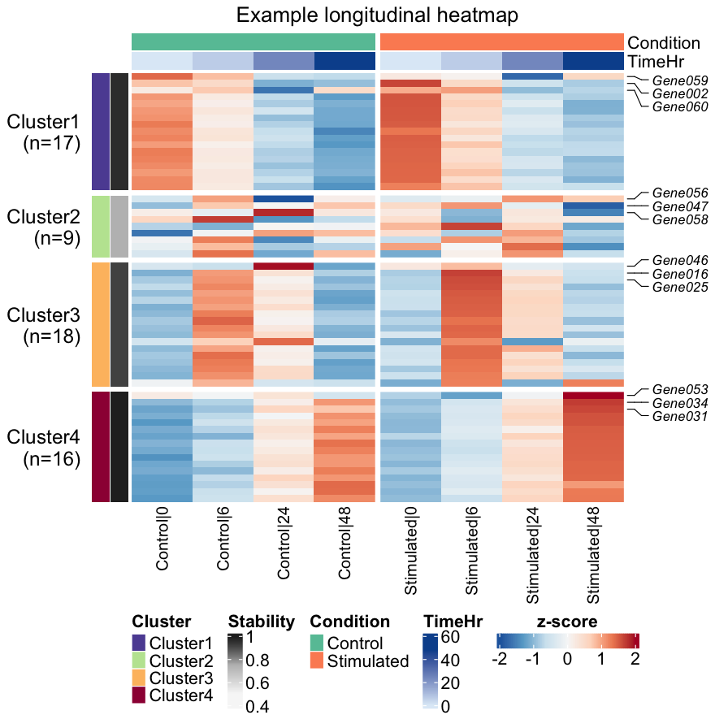
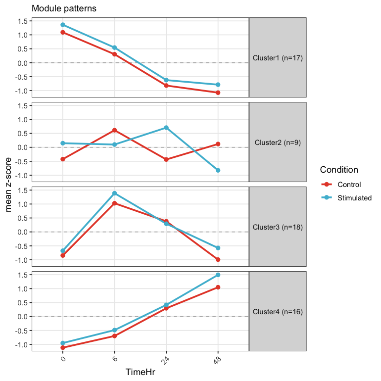
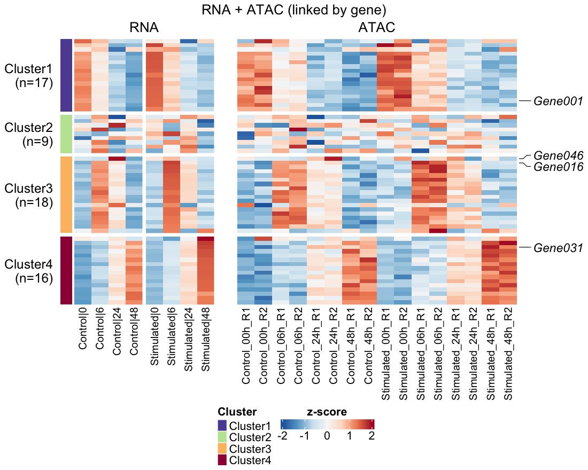
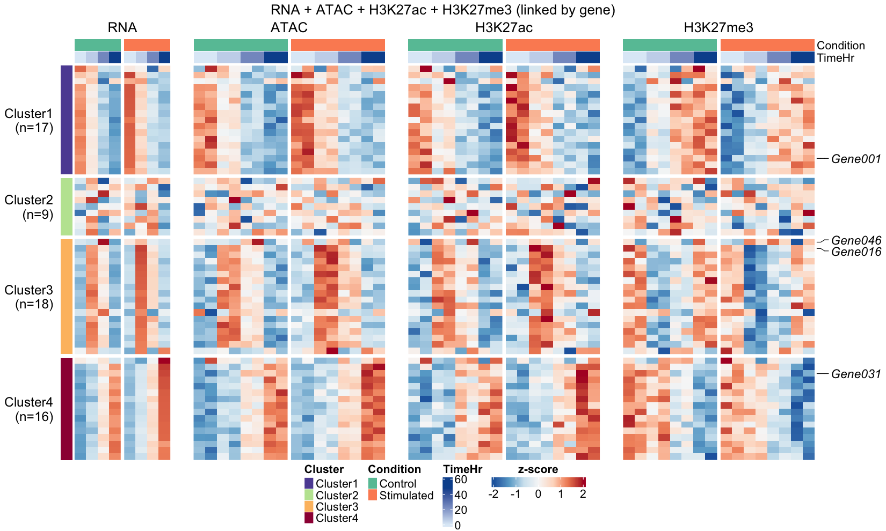
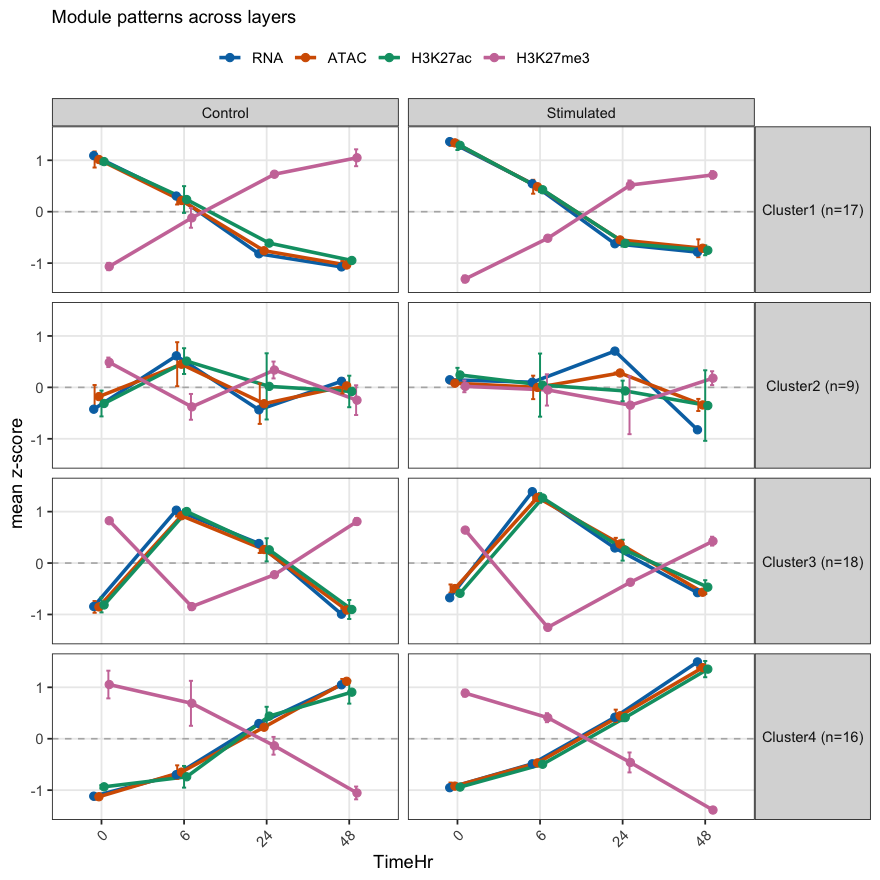
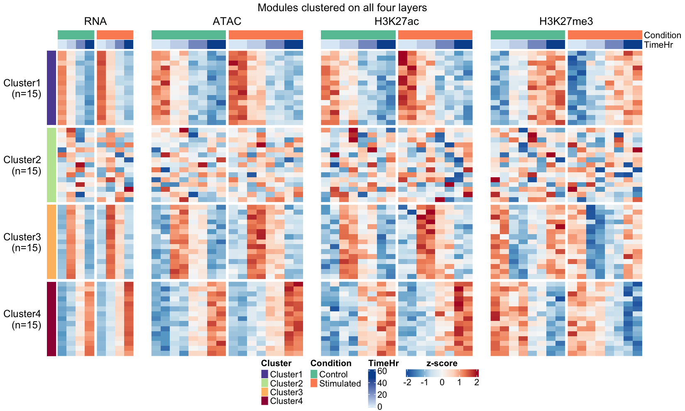
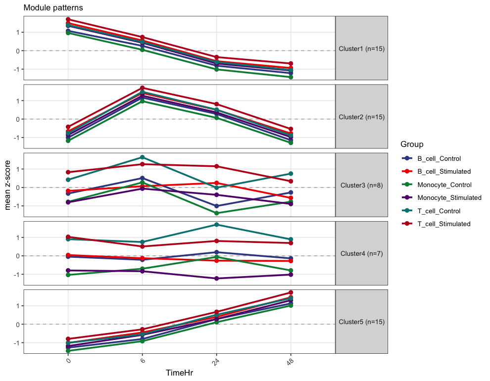

2026-05-01
This tutorial introduces the main ModuleViz workflow with the bundled heatmap_example dataset. It covers module-number diagnostics, longitudinal clustering, heatmap rendering, module trajectory plots, paired omics and multi-omics visualization, pseudobulk summaries, and exportable result tables.
ModuleViz clusters feature trajectories from longitudinal omics experiments and renders ordered temporal heatmaps.
The workflow is useful for RNA-seq, ATAC-seq, CUT&RUN, or other feature-by-sample matrices where columns represent ordered time points, treatment conditions, or both.
This vignette uses the small bundled heatmap_example
dataset so the tutorial runs without network access.
library(ModuleViz)
data("heatmap_example")
mat <- heatmap_example$mat
meta <- heatmap_example$meta
dim(mat)
#> [1] 60 16head(meta)
#> SampleID Condition TimeHr Replicate
#> 1 Control_00h_R1 Control 0 1
#> 9 Control_00h_R2 Control 0 2
#> 2 Control_06h_R1 Control 6 1
#> 10 Control_06h_R2 Control 6 2
#> 3 Control_24h_R1 Control 24 1
#> 11 Control_24h_R2 Control 24 2The returned object is plain R data:
mat: numeric feature-by-sample matrix.meta: one row per sample, with sample ID, condition,
time, and replicate.choose_k() calculates a simple
within-cluster-sum-of-squares elbow diagnostic. Use it as a first pass,
then choose a biologically interpretable value.
diag <- choose_k(
zscore_rows(mat),
k_range = 2:5,
method = "kmeans"
)
diag
#> k tot_withinss mean_silhouette elbow_k
#> <int> <num> <num> <int>
#> 1: 2 487.3139 0.4278328 3
#> 2: 3 304.4957 0.4936076 3
#> 3: 4 238.8972 0.5400721 3
#> 4: 5 203.9076 0.5493611 3attr(diag, "suggested_k")
#> [1] 3obj <- longitudinal_cluster(
mat,
meta,
sample_col = "SampleID",
time_col = "TimeHr",
group_col = "Condition",
k = 4,
method = "kmeans",
aggregate_replicates = TRUE,
stability = TRUE,
n_resample = 10
)
obj
#> <longi> 60 features x 8 samples, 4 modules (kmeans)
#> stability (mean Jaccard): 0.75 - 0.99Clusters are reordered by their temporal peak, so early-high modules appear before late-high modules.
longitudinal_heatmap(
obj,
annotation_cols = c("Condition", "TimeHr"),
top_n_label = 3,
label_fontsize = 11,
cluster_palette = "spectral",
title = "Example longitudinal heatmap"
)
To save a PDF:
longitudinal_heatmap(
obj,
annotation_cols = c("Condition", "TimeHr"),
top_n_label = 3,
file = "example_heatmap.pdf",
width = 9,
height = 12
)pattern_lineplot(obj, palette = "nature", base_size = 12)
dual_heatmap() is the two-layer case of
multi_heatmap() (next section).
The primary matrix drives clustering and row order. The secondary matrix is aligned by gene and displayed next to it. This example simulates two ATAC peaks per gene using the bundled expression data so the code is fully runnable.
set.seed(99)
genes <- rownames(mat)
atac <- mat[rep(seq_along(genes), each = 2), , drop = FALSE]
rownames(atac) <- paste0(
"Peak",
sprintf("%03d", seq_len(nrow(atac))),
"_",
rep(genes, each = 2)
)
atac <- atac + matrix(rnorm(length(atac), sd = 0.35), nrow = nrow(atac))
dual_heatmap(
primary = obj,
secondary = atac,
primary_name = "RNA",
secondary_name = "ATAC",
gene_of_primary = function(id) id,
gene_of_secondary = function(id) sub("^.*_", "", id),
aggregate = "mean",
label_features = c("Gene001", "Gene016", "Gene031", "Gene046"),
cluster_palette = "spectral"
)
multi_heatmap() takes a named list of any number of
layers (here RNA, ATAC, H3K27ac, and H3K27me3) and draws one panel per
layer. Every panel shares the RNA module split and row order, and one
z-score legend covers all of them. Each layer is z-scored within itself
and collapsed to one row per gene, so peaks and genes line up row for
row.
The two histone layers are simulated: an activating mark that follows expression and a repressive mark that mirrors it.
as_regions <- function(m, sign = 1, sd = 0.5) {
out <- sign * m + matrix(rnorm(length(m), sd = sd), nrow = nrow(m))
rownames(out) <- paste0("region", seq_len(nrow(m)), "_", rownames(m))
out
}
layers <- list(
RNA = obj,
ATAC = atac,
H3K27ac = as_regions(mat),
H3K27me3 = as_regions(mat, sign = -1)
)
multi <- multi_heatmap(
layers,
meta = meta, sample_col = "SampleID", time_col = "TimeHr",
group_col = "Condition",
label_features = c("Gene001", "Gene016", "Gene031", "Gene046"),
cluster_palette = "spectral",
show_column_names = FALSE
)
multi
#> <multi_longi> 60 genes x 4 layers (RNA + ATAC + H3K27ac + H3K27me3), 4 modules
#> clustered by: RNA
#> stability (mean Jaccard): 0.75 - 0.99multi_lineplot() draws each module’s mean trajectory in
every layer, which shows at a glance which marks follow expression and
which oppose it:
multi_lineplot(multi)
To cluster on all layers together instead of on RNA alone, use
cluster_by = "joint". gene_set = "reference"
keeps every RNA gene and draws layers without that gene in grey.
multi_heatmap(
layers,
meta = meta, sample_col = "SampleID", time_col = "TimeHr",
group_col = "Condition", cluster_by = "joint", k = 4,
cluster_palette = "spectral", show_column_names = FALSE,
title = "Modules clustered on all four layers"
)
Single-cell data can be summarized into pseudobulk profiles by cell type, condition, time point, and replicate. The resulting feature-by-pseudobulk matrix uses the same ModuleViz functions.
cell_types <- c("T_cell", "Monocyte", "B_cell")
cells_per_sample_type <- 10
set.seed(2026)
cell_meta <- do.call(rbind, lapply(seq_len(nrow(meta)), function(i) {
do.call(rbind, lapply(cell_types, function(ct) {
data.frame(
CellID = sprintf("%s_%s_Cell%03d", meta$SampleID[i], ct,
seq_len(cells_per_sample_type)),
SampleID = meta$SampleID[i],
Condition = meta$Condition[i],
TimeHr = meta$TimeHr[i],
Replicate = meta$Replicate[i],
CellType = ct,
stringsAsFactors = FALSE
)
}))
}))
cell_mat <- matrix(NA_real_, nrow = nrow(mat), ncol = nrow(cell_meta),
dimnames = list(rownames(mat), cell_meta$CellID))
cell_type_effect <- c(T_cell = 0.35, Monocyte = -0.15, B_cell = 0.05)
for (j in seq_len(nrow(cell_meta))) {
mu <- mat[, cell_meta$SampleID[j]] + cell_type_effect[[cell_meta$CellType[j]]]
cell_mat[, j] <- mu + rnorm(length(mu), sd = 0.55)
}
pseudobulk_group <- paste(cell_meta$CellType, cell_meta$Condition,
cell_meta$TimeHr, cell_meta$Replicate, sep = "|")
pseudobulk_ids <- unique(pseudobulk_group)
pseudobulk_mat <- sapply(pseudobulk_ids, function(id) {
rowMeans(cell_mat[, pseudobulk_group == id, drop = FALSE])
})
rownames(pseudobulk_mat) <- rownames(mat)
colnames(pseudobulk_mat) <- paste0("PB", seq_along(pseudobulk_ids))
parts <- strsplit(pseudobulk_ids, "\\|")
pseudobulk_meta <- data.frame(
SampleID = colnames(pseudobulk_mat),
CellType = vapply(parts, `[`, character(1), 1),
Condition = vapply(parts, `[`, character(1), 2),
TimeHr = as.numeric(vapply(parts, `[`, character(1), 3)),
Replicate = as.integer(vapply(parts, `[`, character(1), 4)),
stringsAsFactors = FALSE
)
pseudobulk_meta$Group <- paste(pseudobulk_meta$CellType,
pseudobulk_meta$Condition, sep = "_")
sc_obj <- longitudinal_cluster(
pseudobulk_mat,
pseudobulk_meta,
sample_col = "SampleID",
time_col = "TimeHr",
group_col = "Group",
k = 5,
aggregate_replicates = TRUE,
stability = FALSE
)
pattern_lineplot(sc_obj, palette = "science", base_size = 11)
out_dir <- tempdir()
write_memberships(obj, prefix = file.path(out_dir, "heatmap_example"))
#> wrote /var/folders/y_/xw9_7jr539n3gxm864xyvb_80000gp/T//Rtmpmr7WSV/heatmap_example_memberships.txtThis writes:
heatmap_example_memberships.txtheatmap_example_centroids.txtheatmap_example_stability.txtThe package also includes a helper for public datasets in
Bioconductor timecoursedata. These examples are optional
because they require installing the experiment-data package.
available_real_timecourse_datasets()
#> dataset package_object assay
#> <char> <char> <char>
#> 1: sorghum_leaf varoquaux2019leaf RNA-seq
#> 2: sorghum_root varoquaux2019root RNA-seq
#> 3: influenza_mouse shoemaker2015 microarray
#> description
#> <char>
#> 1: Sorghum leaf samples across weekly drought/control time courses.
#> 2: Sorghum root samples across weekly drought/control time courses.
#> 3: Mouse lung samples across influenza infection time points.Install the optional data package before running the real-data workflow:
if (!requireNamespace("BiocManager", quietly = TRUE)) {
install.packages("BiocManager")
}
BiocManager::install("timecoursedata")sorghum <- load_real_timecourse_example(
dataset = "sorghum_leaf",
genotype = "BT642",
min_week = 3,
top_n_features = 1000
)For the mouse influenza microarray dataset:
flu <- load_real_timecourse_example(
dataset = "influenza_mouse",
group = c("C", "K", "M"),
top_n_features = 1000
)sessionInfo()
#> R version 4.3.2 (2023-10-31)
#> Platform: aarch64-apple-darwin20 (64-bit)
#> Running under: macOS 26.7.1
#>
#> Matrix products: default
#> BLAS: /Library/Frameworks/R.framework/Versions/4.3-arm64/Resources/lib/libRblas.0.dylib
#> LAPACK: /Library/Frameworks/R.framework/Versions/4.3-arm64/Resources/lib/libRlapack.dylib; LAPACK version 3.11.0
#>
#> locale:
#> [1] C.UTF-8/C.UTF-8/C.UTF-8/C/C.UTF-8/C.UTF-8
#>
#> time zone: America/New_York
#> tzcode source: internal
#>
#> attached base packages:
#> [1] stats graphics grDevices utils datasets methods base
#>
#> other attached packages:
#> [1] ModuleViz_0.1.0
#>
#> loaded via a namespace (and not attached):
#> [1] utf8_1.2.4 generics_0.1.3 shape_1.4.6.1
#> [4] digest_0.6.35 magrittr_2.0.3 evaluate_0.24.0
#> [7] grid_4.3.2 RColorBrewer_1.1-3 iterators_1.0.14
#> [10] circlize_0.4.16 fastmap_1.2.0 foreach_1.5.2
#> [13] doParallel_1.0.17 GlobalOptions_0.1.2 ComplexHeatmap_2.18.0
#> [16] fansi_1.0.6 scales_1.4.0 codetools_0.2-20
#> [19] cli_3.6.3 rlang_1.1.4 crayon_1.5.3
#> [22] withr_3.0.2 yaml_2.3.8 tools_4.3.2
#> [25] parallel_4.3.2 dplyr_1.1.4 colorspace_2.1-1
#> [28] ggplot2_3.5.2 GetoptLong_1.0.5 BiocGenerics_0.48.1
#> [31] vctrs_0.6.5 R6_2.5.1 png_0.1-8
#> [34] matrixStats_1.3.0 stats4_4.3.2 lifecycle_1.0.4
#> [37] magick_2.8.7 S4Vectors_0.40.2 IRanges_2.36.0
#> [40] clue_0.3-65 cluster_2.1.6 pkgconfig_2.0.3
#> [43] pillar_1.9.0 gtable_0.3.6 data.table_1.15.4
#> [46] glue_1.8.0 Rcpp_1.0.13-1 highr_0.11
#> [49] xfun_0.50 tibble_3.2.1 tidyselect_1.2.1
#> [52] knitr_1.47 dichromat_2.0-0.1 farver_2.1.2
#> [55] rjson_0.2.21 htmltools_0.5.8.1 labeling_0.4.3
#> [58] rmarkdown_2.27 Cairo_1.6-2 compiler_4.3.2